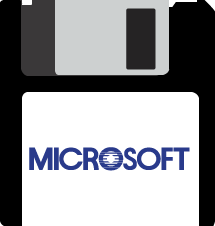

OnTheHub® presents

Evolution of Windows
1982
Windows 1.0
Why "Windows"?
Windows was almost called “Interface Manager”. However, "Windows" better described the look of the
programs on the screen.
The desk goes digital
Windows 1.0 shipped with: Paint, Windows Writer, Notepad, Calculator, a calendar, clock, and Reversi.
1990
Windows 3.0